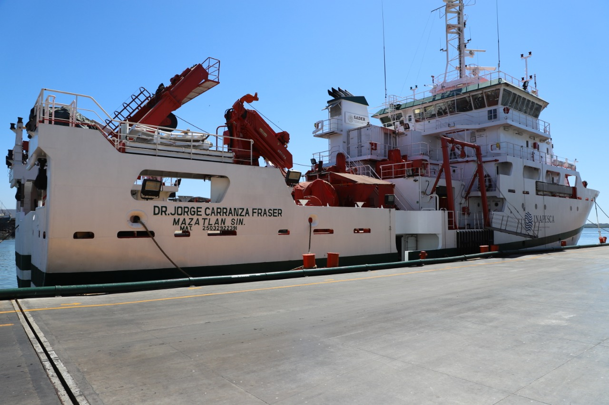

Buque de Investigación
Dr. Jorge Carranza Fraser
El Instituto Nacional de Pesca y Acuacultura (INAPESCA) está dedicado a la investigación aplicada que se vincula al desarrollo y sustentabilidad del sector pesquero y acuícola. Esta actividad permite el cercano y permanente contacto con los pescadores en su ambiente productivo costero y marino, implicando también aquellos de aguas continentales. Los estudios aplicados están vinculados a programas regionales de investigación del INAPESCA. Éstas investigaciones permiten la generación de información científica y técnica para la manifestación de opiniones y dictámenes técnicos y profesionales, como base de la gestión del sector pesquero y acuícola para la obtención de permisos y autorizaciones otorgadas por la Comisión Nacional de Pesca y Acuacultura.
El INAPESCA cuenta con instrumentos de política actualizados, aplicables al sector como las Cartas Nacionales Pesquera y Acuícola, los Planes de Manejo y Normas Oficiales Mexicanas derivadas. Estos instrumentos se actualizan constantemente integrando investigaciones sobre el Cambio Climático, con la finalidad de elaborar estrategias de mitigación de los impactos sobre los recursos marinos pesqueros y acuícolas de los estados ribereños y toda la extensión de la zona económica exclusiva nacional, incluidos su mar territorial, zona contigua y plataforma continental, tal como está establecida su justificación, en la Constitución de los Estados Unidos Mexicanos y demás documentos regulatorios nacionales e internacionales
Acorde con los recientes cambios de las políticas públicas dirigidas al sector pesquero y acuícola para impulsar su productividad y aprovechamiento sustentable de los recursos pesqueros el INAPESCA creó un GEOPORTAL de nominado GEOPESCA. Este portal funciona a manera de un catálogo que engloba diferentes tipos de información, con el fin de difundir las actividades que realiza el INAPESCA mediante la operación del buque Dr. Jorge Carranza Fraser, el cual figura como una de las embarcaciones más modernas en materia de investigación en México
El buque de investigación Dr. Jorge Carranza Fraser realiza investigaciones multidisciplinarias que permitan generar análisis integrales de la información sobre los recursos pesqueros en los mares mexicanos.
Instituciones colaboradoras

CICESE
Centro de Investigación Científica y de Educación Superior de Ensenada, Baja California
Ir a sitio webCICIMAR-IPN
El Centro Interdisciplinario de Ciencias Marinas es un centro de investigación que pertenece al Instituto Politécnico Nacional
Ir a sitio webCIIDIR-IPN
Centro Interdisciplinario de Investigación para el Desarrollo Integral Regional Unidad Sinaloa
Ir a sitio web